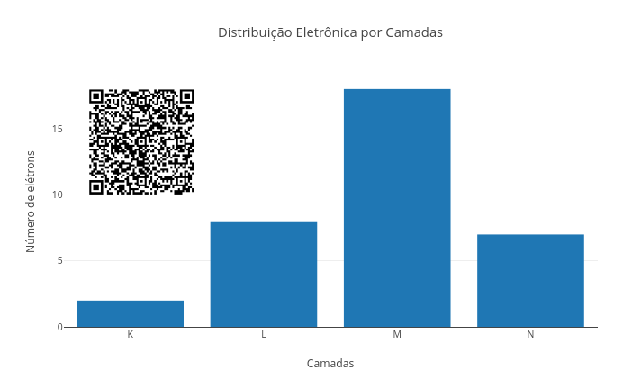
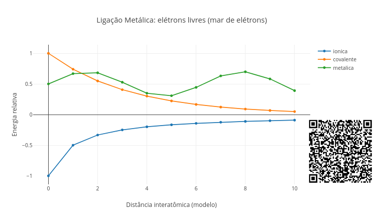
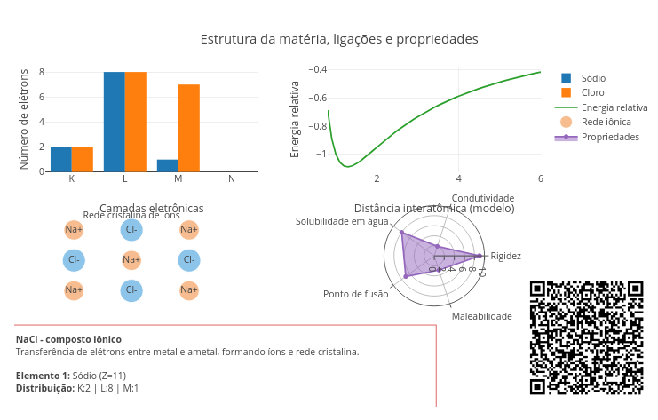
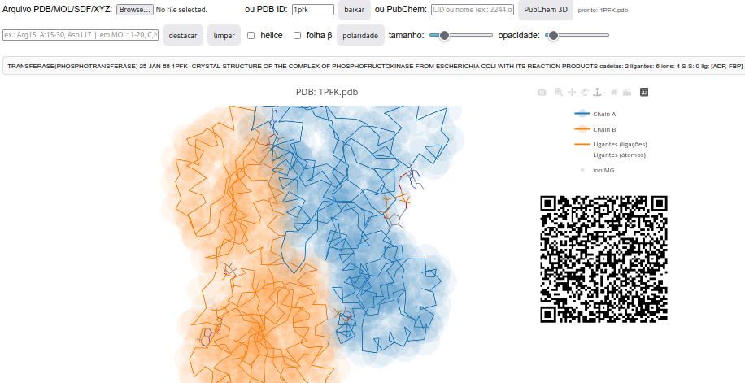

4 Arquitetura da matéria
O sal se dissolve na água, o cobre conduz eletricidade, o diamante é muito duro, e o grafite quebra-se com facilidade por ser macio. Compreender essas diferenças começa dentro do átomo, na forma como os elétrons se organizam, e se estende até como os átomos interagem entre si.
Depois de explorar, você consegue:
- Compreender a organização eletrônica dos átomos
- Relacionar distribuição eletrônica com propriedades químicas
- Diferenciar ligações iônicas, covalentes e metálicas
- Interpretar como interações entre átomos geram materiais com propriedades distintas
- Explorar modelos químicos de forma interativa e computacional
- Utilizar um aplicativo completo para observar e estudar moléculas em 3D
Antes de explorar os conceitos deste capítulo, experimente o script abaixo sobre distribuição eletrônica. Ele mostra como os elétrons se distribuem e preenchem progressivamente as camadas eletrônicas:
\[ K \rightarrow L \rightarrow M \rightarrow N \tag{4.1}\]
E também mostra tendência à estabilidade quando a camada externa se completa, essa denominada camada de valência.

Agite antes de usar
O script mostra como os elétrons de um átomo se distribuem em camadas ao redor do núcleo. Para utilizá-lo, começe alterando no topo do código o valor para o número atômico de um átomo (Z). Ele representa o número de prótons do átomo. Em um átomo neutro, também representa o número de elétrons.
const input_Z = 35;Você pode clicar no botão add após apagar a área gráfica (clean), ou não, e nesse caso podendo comparar valores distintos para Z. Cada barra do gráfico representa uma camada eletrônica, K (mais interna), L, M, e N. A altura da barra indica quantos elétrons estão naquela camada. Assim, os elétrons não ficam distribuídos ao acaso, mas ocupam camadas com capacidades máximas:
- K \(\rightarrow\) até 2 elétrons
- L \(\rightarrow\) até 8 elétrons
- M \(\rightarrow\) até 18 elétrons
- N \(\rightarrow\) até 32 elétrons
No script, essas camadas são preenchidas de dentro para fora. Algumas situações para você pode trabalhar no app:
- Hidrogênio. Possui apenas 1 elétron na camada K.
input_Z = 1;- Oxigênio. A camada K se completa, e L parcialmente preenchida.
input_Z = 8;- Cálcio. Começa a ocupar camadas mais externas.
input_Z = 20;- Bromo. Ocupa várias camadas.
input_Z = 35;Usando o script, tente comparar elementos com Z pequeno e grande, e observe padrões de repetição (periodicidade).
Durante a distribuição eletrônica, as camadas internas enchem primeiro, as externas definem o comportamento químico, e o último nível ocupado responde às reações químicas do átomo, podendo então ser considerado, se não o mais importante, o mais prático ! Ou seja, não é o átomo inteiro que reage, mas sim seus elétrons mais externos.
Esses eletróns da última camada orbital respondem também porque os átomos fazem ligações, e porque alguns ganham, perdem, ou compartilham elétrons. Daí é que nascem as ligações químicas. Portanto, a estrutura da matéria não é aleatória, mas segue uma lógica de preenchimento em camadas que determina a estabilidade, reatividade e o tipo de ligação que os átomos conseguem fazer.
Os átomos tendem a reagir com outros átomos em função de sua última camada orbital. Assim, é possível que a observação da quantidade de seus elétrons livres tenha correlação com essa capacidade de fazer ligações químicas. Nessa direção, tente prever o comportamento químico de um átomo só olhando sua última camada, pra saber se o átomo escolhido tende a perder, ganhar ou compartilhar elétrons.
Átomos não se ligam “por acaso”. Eles se ligam porque isso leva a um estado de menor energia. Entre os tipos de ligação química encontram-se as ligações iônicas(transferência de elétrons), as ligações covalentes (compartilhamento de elétrons), e as ligações metálicas(por elétrons livres).
Se quiser uma ajudinha, experimente o app de JSPlotly na sequência, e que trata de ligações químicas, ou seja, de como os átomos interagem energeticamente.

Agite antes de usar
Esse script é bem facinho. Basta você selecionar o tipo de ligação no código (iônica, metálica, ou covalente) para ter o perfil energético da interação entre dois átomos em função da distância. Dessa forma, ele compara, de forma simplificada, os tipos de ligação química. Para seu uso, basta alterar:
const input_tipo = "covalente";Observe que tanto a curva como o título do gráfico mudam a cada opção. A curva não representa uma equação real completa da ligação, é claro, pois isso está bem além da proposta desse livro. Mas é um modelo visual simplificado para comparar ideias. Observe a forma da curva e a estabilidade energética. Esse script ajuda você a perceber que a matéria não depende apenas dos átomos presentes, mas também da forma como eles se conectam.
Na situação apresentada, significa que a ligação iônica se dá por uma transferência de elétrons, enquanto que a ligação covalente por um compartilhamento de elétrons, e a ligação metálica pela existência de um “mar” de elétrons livres, ou melhor uma “nuvem eletrônica” circulando entre vários átomos.
O sal de cozinha (NaCl) forma uma rede cristalina devido às ligações iônicas entre seus átomos. O cobre (Cu) conduz eletricidade devido às ligações metálicas existentes. A água (H\(_2\)O) compartilha seus elétrons numa ligação covalente (polar). Isso sugere que a forma como os elétrons se organizam determina como os átomos se ligam (invisível), o que por sua vez resulta nas propriedades da matéria (visível).
Agora o mais legal. Como você já percebeu que as ligações químicas são apenas modos diferentes nos quais a matéria organiza elétrons entre átomos, use o app da Figura 4.2 para compreender um pouco mais o que o app da Figura 4.3 quis dizer. Você pode trabalhar com os cenários abaixo:
Quem quer elétrons ?. Teste o script da Figura 4.2 com Z = 11 (Na) e Z = 17 (Cl), e visualize o potencial para a formação de uma ligação iônica entre esses átomos.
Compartilhar ou não ?. Teste elementos com Z próximos, e discuta sobre a
eletronegatividadeque os permite compartilhar elétrons numa ligação covalente.Por que metais conduzem ?. Selecione uma ligação metálica no script da Figura 4.3, e tente relaciná-lo com o potencial de
mobilidade eletrônicade seus átomos.
Algumas questões surgem naturalmente dos apps explorados até então.
- E se aumentarmos o número atômico, o que muda na distribuição eletrônica, e como isso afeta a tendência do átomo em fazer ligações ?
- E se os átomos tiverem eletronegatividade muito diferente, em que ponto o compartilhamento deixa de ser “justo” e passa a ser praticamente uma transferência ?
- E se houver muitos átomos compartilhando elétrons ao mesmo tempo (
rede covalente), como isso explica materiais extremamente duros, como o diamante ? - E se os elétrons mudam de comportamento em cada tipo de ligação, por que os materiais resultantes também mudam tanto ?
- E se a ligação química é a “alma” da matéria, o que a conecta com propriedades como dureza, condução elétrica e ponto de fusão ?
- E se apenas os elétrons da camada de valência participam das ligações, o que aconteceria se os elétrons mais internos também participassem ?
- E se um átomo “quer” ganhar ou perder elétrons, então esse “querer” é real ou é uma forma de descrever busca por estabilidade ?
- E se a mesma dupla de átomos puder formar ligações diferentes dependendo do ambiente, o que muda quando a interação ocorre isolada ou dentro de um material maior ?
- E se organizarmos os átomos de forma diferente, mantendo os mesmos elementos, como explicar que grafite e diamante são feitos só de carbono, mas têm propriedades tão distintas ?
Agora um “E…se” já respondido: “E se…” tudo isso for verdade, como a gente poderia resumir tudo ?
\[ \text{átomo} \rightarrow \text{distribuição eletrônica} \rightarrow \text{ligação} \rightarrow \text{estrutura}\rightarrow \text{propriedade} \]
Ou seja, a distribuição eletrônica sugere a ligação, e essa gera uma estrutura que define as propriedades da matéria.
E que tal agora um JSPlotly para observar exatamente o exposto no diagrama acima ?

Agite antes de usar
O script busca integrar tudo o que foi visto no capítulo: distribuição eletrônica, tipo de ligação, estrutura do material, e propriedades macroscópicas. Para utilizá-lo, altere apenas:
const input_sistema = "NaCl";E teste para “H2O”, “O2”, “Cu”, e “SiO2”, executando o código após cada mudança pelo botão clean seguido de add. O script está dividido em 4 partes: distribuição eletrônica, curva de energia, estrutura, e propriedades.
- Distribuição eletrônica. Mostra como os elétrons estão organizados em cada átomo, e define o comportamento químico.
- Curva de energia. Mostra como a energia varia com a distância entre átomos, e indica a estabilidade da ligação.
- Estrutura. Representa visualmente o tipo de ligação (rede iônica, molécula covalente, metal, ou rede covalente), e mostra “como os átomos ficam juntos”.
- Propriedades. Uma representação em radar, resume algumas características do material, como
rigidez,condutividade,solubilidade,ponto de fusão, emaleabilidade.
Alguns cenários são sugeridos para você sedimentar as ideias até aqui sobre átomos, ligações, e matéria.
- Compare extremos. Observe como estrutura e propriedades mudam completamente.
"NaCl" // iônica
"Cu" // metálica- Molécula X rede. Veja que uma mesma ideia para ligação covalente pode resultar em comportamentos muito diferentes.
"H2O"
"SiO2"- Mesmo elemento, organização diferente. Observe uma ligação simples sem rede extensa.
"O2"Em resumo, perceba que os elétrons definem ligações, que as ligações definem estrutura, e que a estrutura define as propriedades da matéria. Além de consistir em partículas em torno do núcleo, a organização e redistribuição dos elétrons explicam por que a matéria assume formas, funções e comportamentos tão distintos no mundo real. Em outras palavras, a matéria é uma consequência da organização dos elétrons.
Aqui o termo “outros mundos” chega mesmo a possuir um significado mais amplo, já que elementos químicos da matéria são vistos bem além do nosso planeta ! Contudo, mantendo-se o pé no chão desse, pode-se elencar propriedades emergentes distintas entre átomos ou moléculas até mesmo parecidas, e vindas da interação entre seus átomos. Ilustrando, a diferença de atração entre átomos de O\(_2\) ou entre átomos de N\(_2\). Embora sejam dois gases simples, seus comportamentos são bem diferentes, pois o primeiro possui uma ligação dupla, enquanto o segundo uma tripla. Isso afeta diretamenta a estabilidade, reatividade e energia envolvida nas reações.
Um exemplo “brilhante” é o que acontece com o diamante e o grafites, que são materiais feitos exclusivamente por carbono, mas com estruturas bastante distintas. Esses arranjos transformam um material macio em um dos mais duros que existem, consequência da rede de ligações também diferentes. As ligas metálicas, por sua vez, possuem propriedades ajustáveis, e que permitem que misturas de metais acabem por gerar novos materiais, distintos em condutividade, resistência e maleabilidade.
Polaridade e geometria também são propriedades emergentes das conexões diferenciadas entre átomos, como ocorre com água e dióxido de carbono (CO\(_2\)). Ambos têm oxigênio, mas comportamentos totalmente distintos. A água em seu estado líquido ajuda a dissolver várias substâncias, enquanto CO\(_2\) é um gás pouco interativo. Um propriedade “chocante” da matéria é a condução elétrica de compostos como NaCl sólido e NaCl dissolvido em água, a qual está presente apenas na segunda.
Há também elementos idênticos a compor determinados materiais, mas com estruturas também distintas, como acontece com o SiO\(_2\) quando comparado ao CO\(_2\). Um forma um sólido rígido por uma rede cristalina, enquanto o outro forma moléculas de gás dispersas no meio. Por fim, mas nunca “o fim”, as propriedades distintas entre metais e polímeros. Os primeiros possuem elétrons livres cuja interação entre átomos resulta em materiais rígidos, enquanto os polímeros encerram seus elétrons em moléculas unidas por cadeias, resultando na flexibilidade estrutural do composto.
Você já ouviu aquela famosa frase de um astronauta norte-americano ao pousar na Lua, “…um pequeno passo para um homem, um salto gigantesco para a humanidade” ? Ou aquela do Tio Ben no universo do Homem-Aranha, “com grandes poderes vêm grandes responsabilidades” ?
Então, para o tema de átomos, ligações e materiais, que tal… “Pequenas mudanças na organização, grandes mudanças no comportamento !”
4.1 ZeMol - um visualizador 3D para modelos atômicos
Agora vamos para um aplicativo completo feito com JSPlotly e voltado para a observação de modelos atômicos, ZeMol. Trata-se de um app que permite estudar diversas características de moléculas simples e polímeros, incluindo os polímeros biológicos, tais como proteínas, enzimas, DNA, e RNA.

Agite antes de usar
Com o ZeMol é possível estudar diversas características de biomoléculas grandes em 3D, como proteínas e DNA, bem como moléculas pequenas, e mesmo átomos isolados. Embora seja mais voltado para estudos que envolvem moléculas biológicas complexas, é possível visualizar diversas moléculas conhecidas, seus átomos e ligações, carregando-as no app a partir de um banco de dados na nuvem ou mesmo de arquivo em mídia física.
4.1.1 Pequenas moléculas
Para carregar uma molécula simples, digite no campo “PubChem:” uma molécula de seu interesse. O inconveniente é que o banco de dados que busca a molécula só o faz se você escrever o nome dela em inglês. Assim, para uma molécula de aspirina, por exemplo, você digita aspirin.
Depois de digitar o nome da molécula, basta clicar no botão PubChem 3D. Veja o resultado para a aspirin:

PubChem).
Agora você pode usar o mouse (ou a tela capacitiva) para girar a molécula ou dar um zoom. Perceba também que a molécula possui átomos cinza e vermelhos. Essa coloração é devida a um padrão internacional da Química chamada coloração CPK, e na qual o cinza representa o carbono e o vermelho o oxigênio (se houver azul, é nitrogênio, e o laranja é representado para o fósforo ou enxofre).
Você também pode aumentar o tamanho dos átomos da molécula, as “bolinhas”. Para isso, basta deslizar a barra de CA size. E pode também colocar uma transparência nessas “bolinhas” (átomos), usando o slider para opacidade.
Se você achou legal, carregue outras moléculas e veja a diferença das estruturas no espaco 3D. Algumas sugestões são (inglês): glucose, caffein, ethanol, e menthol. Uma dica: se as bolinhas não estiverem aparecendo, basta recarregar a página. E se quiser ver “a cara” de outras moléculas, verifique antes se elas existem no banco de dados do Pubchem.
4.1.2 Moléculas gigantes
Um exemplo impressionante é quando você carrega uma molécula bem grandona, como uma proteína, um biopolímero que pode ter mais de 5.000 átomos ! Para isso, você deve usar o campo ou PDB ID:, e digitar um código que é específico de outro banco de dados: o PDB, iniciais para “Protein Data Bank”. Aí é só clicar em “baixar” para ver a proteína também em 3D.
Alguns exemplos bem legais são: 3I40, a insulina, principal regulador de glicose do sangue), e 6VXX, a proteína espícula (spike) do vírus SARS-Cov-2 que nos atingiu severamente durante a pandemia da COVID-19. Essa imensa proteína com mais de 45.000 átomos é ilustrada abaixo.

No primeiro script da Figura 4.2, você viu como a distribuição eletrônica é construída a partir do número atômico. Olhando isso “por dentro”, o script resolve o problema de como distribuir elétrons em camadas, respeitando suas capacidades máximas. Pelo código:
const Z = typeof input_Z !== "undefined" ? input_Z : 35;
let eletrons_restantes = Z;
const camadas = [];
const capacidade = [2, 8, 18, 32];
for (let i = 0; i < capacidade.length; i++) {
if (eletrons_restantes > 0) {
let alocar = Math.min(eletrons_restantes, capacidade[i]);
camadas.push(alocar);
eletrons_restantes -= alocar;
} else {
camadas.push(0);
}
}Nesse trecho, o script começa com o número total de elétrons (\(Z\)). Depois ele define a capacidade máxima de cada camada e a preenche, começando pela mais interna. E então para quando não há mais elétrons disponíveis. Uma sugestão para seu pseudocódigo pode ser:
Definir número total de elétrons (Z)
Definir capacidades das camadas:
K, L, M, N
Para cada camada:
Se ainda há elétrons:
colocar o máximo possível na camada
diminuir elétrons restantes
Senão:
colocar zero
Fim